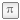

Library with models for connecting thermal models
Each machine model is equipped with a machine-specific conditional thermalPort.
If useThermalPort == false, a machine-specific thermal ambient prescribing constant temperatures is used inside the machine.
If useThermalPort == true, a thermal model or machine-specific thermal ambient prescribing the temperatures has to be connected from outside.
On the other hand, all losses are dissipated to this internal or external thermal ambient.
The machine specific thermal connector contains heatPorts
for all relevant loss sources of the machine type, although some of the loss sources are not yet implemented;
these heatPorts are left unconnected inside the machine, i.e., the HeatFlowRate is zero,
but they have to be connected to a constant temperature source in the internal or external thermal ambient.
Simple machine-specific thermal ambients for constant temperatures (useTemperatureInputs == false)
or temperatures prescribed via signal inputs (useTemperatureInputs == true) are provided in this package.
Up to now, only Ohmic losses in stator and rotor windings are implemented. They are modeled as linearly temperature dependent resistors:
ROperational = RRef * (1 + alphaRef * (TOperational - TRef))
RRef at reference temperatureTRefalpha20 at 20°CTOperational
(if useThermalPort == false; otherwise, the operational temperature is provided via the heatPort)TNominal
(required for DC machines to calculate the turns ratio)
The linear temperature coefficient alpha20 at 20°C = 293.15 K has to be converted to reference temperature TRef:
alpha20
alphaRef = -------------------------------
1 + alpha20 * (TRef - 293.15)
For this reason, the function convertAlpha is provided. In sub-package Constants linear temperature coefficients at 20°C for commonly used materials are defined.
heatPortStatorWinding[m]: m=3 heatPorts for the m=3 stator phasesheatPortRotorWinding: heatPort for the rotor cageheatPortStatorCore: stator core losses (not yet fully implemented)heatPortRotorCore: rotor core losses (not yet connected/implemented)heatPortStrayLoad: stray load lossesheatPortFriction: friction lossesheatPortStatorWinding[m]: m=3 heatPorts for the m=3 stator phasesheatPortRotorWinding[m]: m=3 heatPorts for the m=3 rotor phasesheatPortBrush: brush losses (not yet connected/implemented)heatPortStatorCore: stator core losses (not yet fully implemented)heatPortRotorCore: rotor core losses (not yet fully implemented)heatPortStrayLoad: stray load lossesheatPortFriction: friction lossesheatPortStatorWinding[m]: m=3 heatPorts for the m=3 stator phasesheatPortRotorWinding: conditional (useDamperCage=true/false) heatPort for the damper cageheatPortPermanentMagnet: permanent magnet losses (not yet connected/implemented)heatPortStatorCore: stator core losses (not yet fully implemented)heatPortRotorCore: rotor core losses (not yet connected/implemented)heatPortStrayLoad: stray load lossesheatPortFriction: friction lossesheatPortStatorWinding[m]: m=3 heatPorts for the m=3 stator phasesheatPortRotorWinding: conditional (useDamperCage=true/false) heatPort for the damper cageheatPortExcitation: electrical excitationheatPortBrush: brush lossesheatPortStatorCore: stator core losses (not yet fully implemented)heatPortRotorCore: rotor core losses (not yet connected/implemented)heatPortStrayLoad: stray load lossesheatPortFriction: friction lossesheatPortStatorWinding[m]: m=3 heatPorts for the m=3 stator phasesheatPortRotorWinding: conditional (useDamperCage=true/false) heatPort for the damper cageheatPortStatorCore: stator core losses (not yet fully implemented)heatPortRotorCore: rotor core losses (not yet connected/implemented)heatPortStrayLoad: stray load lossesheatPortFriction: friction lossesheatPortArmature: armature lossesheatPortPermanentMagnet: permanent magnet losses (not yet connected/implemented)heatPortBrush: brush lossesheatPortCore: armature core lossesheatPortStrayLoad: stray load lossesheatPortFriction: friction lossesheatPortArmature: armature lossesheatPortExcitation: electrical (shunt) excitationheatPortBrush: brush lossesheatPortCore: armature core lossesheatPortStrayLoad: stray load lossesheatPortFriction: friction lossesheatPortArmature: armature lossesheatPortSeriesExcitation: electrical series excitationheatPortBrush: brush lossesheatPortCore: armature core lossesheatPortStrayLoad: stray load lossesheatPortFriction: friction lossesheatPortArmature: armature lossesheatPortShuntExcitation: electrical (shunt) excitationheatPortSeriesExcitation: electrical series excitationheatPortBrush: brush lossesheatPortCore: armature core lossesheatPortStrayLoad: stray load lossesheatPortFriction: friction lossesheatPort1[m]: m=3 heatPorts for the m=3 primary phasesheatPort2[m]: m=3 heatPorts for the m=3 secondary phasesheatPortCore: iron core losses (not yet connected/implemented)Extends from Modelica.Icons.Package (Icon for standard packages).
| Name | Description |
|---|---|
| LinearTemperatureCoefficient20 | Linear temperature coefficient with choices |
|  Constants | Material Constants |
| Converts alpha from temperature 1 (default 20 degC) to temperature 2 | |
| Converts resistance from reference temperature to an actual temperature | |
| Thermal parts of asynchronous induction machines | |
| Thermal parts of synchronous induction machines | |
| Thermal parts of DC machines | |
| ThermalAmbientTransformer | Thermal ambient for transformers |
Linear temperature coefficient with choices
 Modelica.Electrical.Machines.Thermal.convertAlpha
Modelica.Electrical.Machines.Thermal.convertAlphaConverts alpha from temperature 1 (default 20 degC) to temperature 2
From the temperature coefficient alpha1 at temperature T1 (default 20 degC = 293.15 K)
the temperature coefficient alpha2 at temperature T2 is calculated:
alpha1
alpha2 = ------------------------
1 + alpha1 * (T2 - T1)
Extends from Modelica.Icons.Function (Icon for functions).
| Name | Description |
|---|---|
| alpha1 | Temperature coefficient at temperature 1 (default: 20 degC) [1/K] |
| T2 | Temperature 2 [K] |
| T1 | Temperature 1 (default: 20 degC) [K] |
| Name | Description |
|---|---|
| alpha2 | Temperature coefficient at TRef [1/K] |
Modelica.Electrical.Machines.Thermal.convertResistanceConverts resistance from reference temperature to an actual temperature
From the temperature coefficient alpha20 at 20 degC (equals to 293.15 K) the parameter alphaRef at TRef
alpha20
alphaRef = -------------------------------
1 + alpha20 * (TRef - 293.15)
is determined; using this value, actual resistance R with respect to the actual temperature T is calculated by
R ------ = 1 + alphaRef * (T - TRef) RRef
where RRef is the resistance at the reference temperature TRef.
Extends from Modelica.Icons.Function (Icon for functions).
| Name | Description |
|---|---|
| RRef | Resistance at TRef [Ohm] |
| TRef | Reference temperature [K] |
| alpha20 | Temperature coefficient at 20 degC [1/K] |
| T | Actual temperature [K] |
| Name | Description |
|---|---|
| R | Actual resistance at T [Ohm] |
Thermal ambient for transformers
| Name | Description |
|---|---|
| m | Number of phases |
| useTemperatureInputs | If true, temperature inputs are used; else, temperatures are constant |
| T1 | Temperature of primary windings [K] |
| T2 | Temperature of secondary windings [K] |
| Name | Description |
|---|---|
| thermalPort | |
| TPrimary | Temperature of primary windings |
| TSecondary | Temperature of secondary windings |